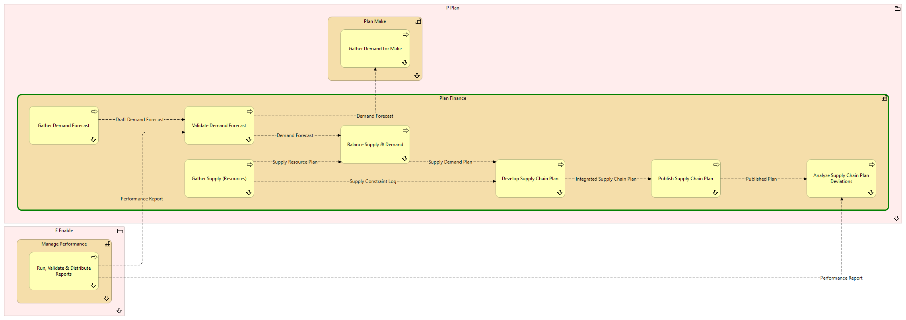

Plan Finance - Processes
(
)

generated_by
build_archi_xml.py::gen_process_context_view
generator_path
pedro/capabilities/build_archi_xml_assign/build_archi_xml_assign.py
run_at
2026-10-10T17:56:01
view_type
capability_processes
P Plan
Plan Finance
Gather Supply (Resources)
Gather Supply (Resources) - Context
Analyze Supply Chain Plan Deviations
Analyze Supply Chain Plan Deviations - Context
Publish Supply Chain Plan
Publish Supply Chain Plan - Context
Validate Demand Forecast
Validate Demand Forecast - Context
Balance Supply & Demand
Balance Supply & Demand - Context
Develop Supply Chain Plan
Develop Supply Chain Plan - Context
Gather Demand Forecast
Gather Demand Forecast - Context
Plan Make
Gather Demand for Make
Gather Demand for Make - Context
Plan Make - Processes
P Plan - Processes
E Enable
Manage Performance
Run, Validate & Distribute Reports
Run, Validate & Distribute Reports - Context
Manage Performance - Processes
E Enable - Processes
Supply Resource Plan
Gather Supply (Resources)
Balance Supply & Demand
Supply Constraint Log
Gather Supply (Resources)
Develop Supply Chain Plan
Published Plan
Publish Supply Chain Plan
Analyze Supply Chain Plan Deviations
Demand Forecast
Validate Demand Forecast
Balance Supply & Demand
Demand Forecast
Validate Demand Forecast
Gather Demand for Make
Supply Demand Plan
Balance Supply & Demand
Develop Supply Chain Plan
Integrated Supply Chain Plan
Develop Supply Chain Plan
Publish Supply Chain Plan
Draft Demand Forecast
Gather Demand Forecast
Validate Demand Forecast
Performance Report
Run, Validate & Distribute Reports
Analyze Supply Chain Plan Deviations
Performance Report
Run, Validate & Distribute Reports
Validate Demand Forecast